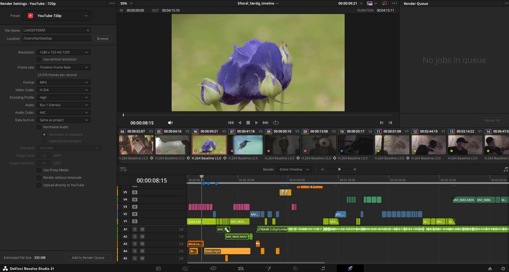
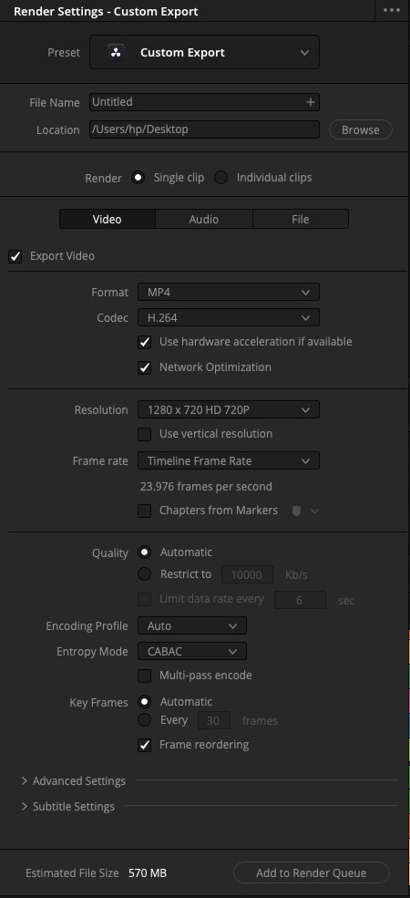
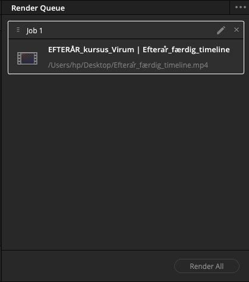

Første del
Vælg din retning
Der er ikke ét rigtigt svar. Har I egne optagelser med, er de oplagte at bruge. Har I ikke, er der lige så meget værd i at bruge tiden på at gøre noget fra dagen færdigt.
- Dit eget materiale. Opret et helt nyt projekt til det, i stedet for at importere ind i kursusprojektet. Prøv om du kan sætte dit eget projekt op fra bunden og redigere din egen med det du har lært i dag.
- Gør Lund-filmen færdig. Tilbage til 03 EDIT, og fortsæt der, hvor I stoppede: Edit L1's genskabte intro, eller en af Edit L2's teknikker.
- Leg videre med Color. Tilbage til 04 COLOR PAGE, og prøv en af de valgfrie opgaver, I ikke nåede: skift en farve, orange og teal, eller ret det blå klip.
- Byg din egen titel i Fusion. Tilbage til 05 FUSION, og byg en titel med jeres eget ord eller navn, eller prøv green screen-delen.
Anden del
Byg noget
Ingen trinliste her. Brug det, I har lært i dag, på det, I selv har valgt. Spørg, hvis I sidder fast, men prøv selv først.
Jeg valgte eget materiale og ved ikke hvor jeg skal starte
Gå til Project Manager (husikonet), og klik New Project. Sæt Project Settings til den rigtige opløsning og framerate for jeres eget materiale, akkurat som i L1. Importer derefter jeres klip, og byg videre derfra.
Tredje del
Eksport
Til sidst skal det, I har bygget, ud af Resolve og ind i en fil, I kan sende eller vise frem. Det foregår på Deliver-siden.

-
Vælg et preset
I Render Settings vælger I et Preset øverst, fx YouTube 720p. Det sætter automatisk format, codec og opløsning til noget, der virker de fleste steder. Giv filen et navn under File Name, og vælg hvor den skal gemmes under Location.
-
Eller sæt det hele selv
Vælger I Custom Export i stedet, får I adgang til hver enkelt indstilling: format, codec, opløsning, framerate og kvalitet. I skal ikke bruge det i dag, men det er der, hvis I får brug for et format, ingen preset dækker.

-
Tilføj til køen, og render
Klik Add to Render Queue nederst. Jobbet lægger sig i Render Queue til højre, med filnavn og destination synlig. Klik Render All for at starte. I kan tilføje flere jobs, før I render, hvis I vil have flere versioner ud på én gang.

Render All er grå og kan ikke klikkes
Tjek at der faktisk ligger et job i Render Queue. Add to Render Queue skal klikkes først, Render All virker først, når der er noget at rendere.